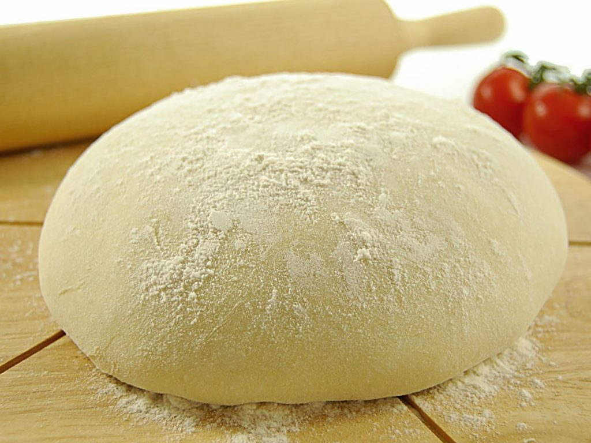

- Ингредиенты
- Мука - 1кг
- Теплая вода - 550мл
- Живые дрожжи - 10гр
- Растительное масло - 70мл
- Соль - 20гр

1. Просеиваем муку в глубокую миску
2. Смешиваем остальные ингредиенты в отдельной емкости
3. Медленно вливаем получившуяся жидкость, одновременно перемешивая муку от края в центр
4. Месим тесто до упругого состояния
5. Накрываем и убираем в теплое место на 2 часа
6. Тесто готово к приготовлению пиццы
P.S. Из данного объема теста получается 4 основы для пиццы ~ 30см. Тесто лучше аккуратно растягивать руками